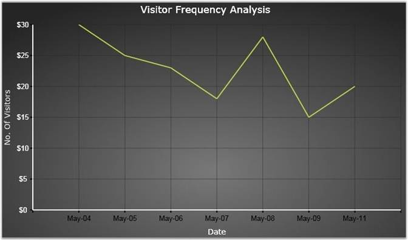

By default, the value type of the chart axis labels is double. You can change it to other formats also, using some in-built properties. This section discusses about those properties which can set different formats for the labels.
You can apply three types of formats to the chart axis labels using ValueType property. They are Double (default) and DateTime and String formats.
Chart has the following properties, which controls the formatting features.
|
Axis Label property |
Description |
|
ValueType |
Specifies any of the below value types for the axis labels. Double - This type is default one, Indicates label data's type is double. DateTime - This is used to set the axis label as Date format. String - This is used to set the string data to be bind on axis labels. |
|
LabelFormat |
Specifies the double value format for axis labels when the ValueType is set to Double. |
|
LabelDateTimeFormat |
Specifies the date-time formatting for the axis labels when the ValueType is set to DateTime. |
|
Prefix |
Specifies the content to be added before the axis labels. |
|
Suffix |
Specifies the content to be added after the axis labels. |
The following code is used to format the axis labels.
|
[XAML]
<syncfusion:ChartArea.PrimaryAxis> <syncfusion:ChartAxis LabelFontFamily="Arial" ValueType="DateTime" LabelFontSize="17" LabelDateTimeFormat="MMM-dd" > <syncfusion:ChartAxis.Header> <TextBlock Text="Date" FontSize="14"/> </syncfusion:ChartAxis.Header> </syncfusion:ChartAxis> </syncfusion:ChartArea.PrimaryAxis>
<syncfusion:ChartArea.SecondaryAxis> <syncfusion:ChartAxis LabelFontSize="17" LabelFormat="0.0" Prefix="$"> <syncfusion:ChartAxis.Header> <TextBlock Text="Amount" FontSize="14"/> </syncfusion:ChartAxis.Header> </syncfusion:ChartAxis> </syncfusion:ChartArea.SecondaryAxis> |
|
[C#]
//To set the Axis Label type as Date Time chart.Areas[0].PrimaryAxis.ValueType = ChartValueType.DateTime;
//To set the Date-Time format for Axis label chart.Areas[0].PrimaryAxis.LabelDateTimeFormat = "MMM-dd";
//To set the Double format for Axis label chart.Areas[0].SecondaryAxis.LabelFormat = "0.0";
//To set the prefix content to be added before axis label chart.Areas[0].SecondaryAxis.Prefix = "$"; |
The following images illustrate the chart labels with DateTime format settings for x-axis and Double format settings for y-axis.

Figure 90: PrimaryAxis.LabelDateTimeFormat = "MMM-DD"; PrimaryAxis.ValueType = "DateTime"; SecondaryAxis.Prefix = "$"; SecondaryAxis.LabelFormat = "0.0"
See Also